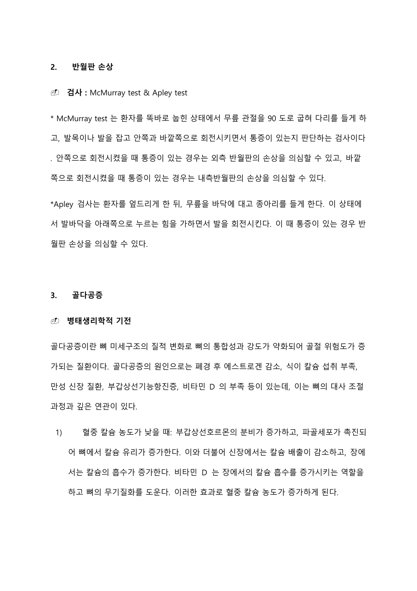
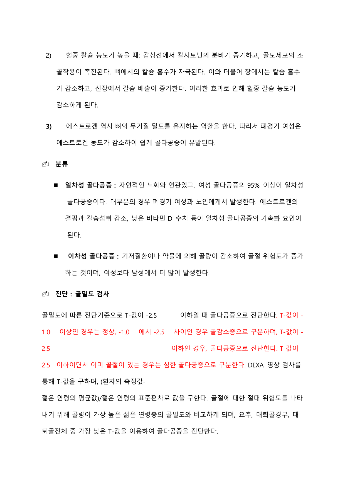
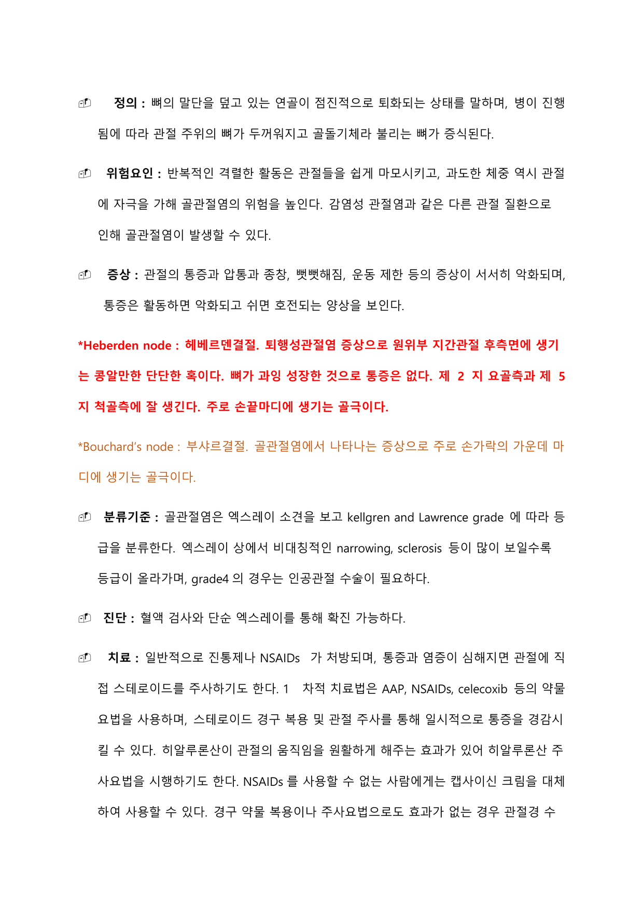
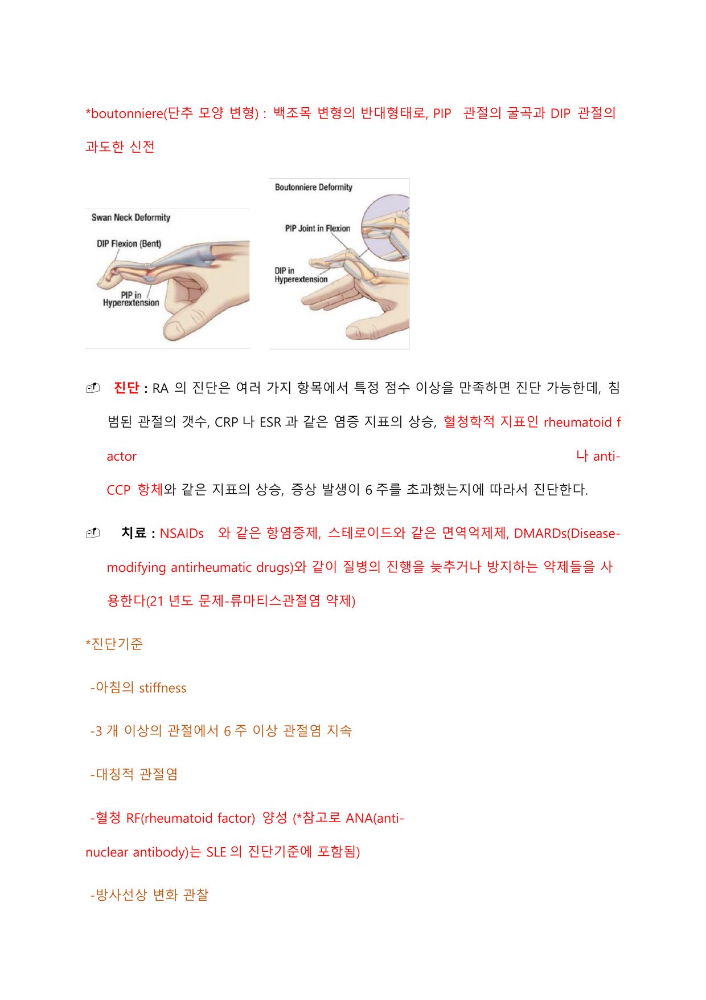
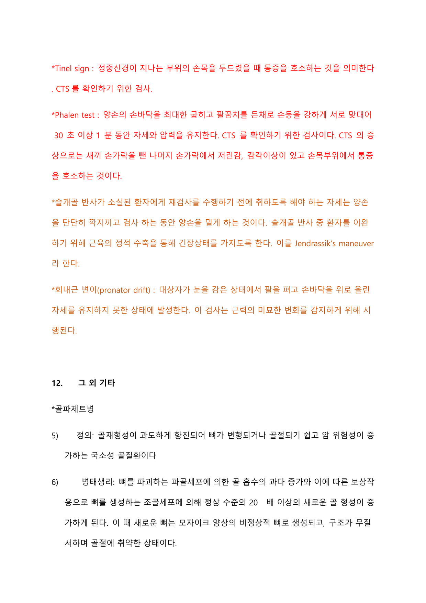

근골격계
반월판 손상, 골다공증, 골절, 강직성 척추염, 척추질환, 통풍, 골관절염, 류마티스 관절염 등 뼈·관절·연부조직 질환과 근골격 관련 검사를 다룬다.
1 반월판 손상 Meniscus injury
- McMurray test: 환자를 똑바로 눕힌 상태에서 무릎 관절을 90도로 굽혀 다리를 들게 하고, 발목이나 발을 잡고 안쪽·바깥쪽으로 회전시키면서 통증 여부를 판단한다. 안쪽으로 회전시킬 때 통증이 있으면 외측 반월판 손상, 바깥쪽으로 회전시킬 때 통증이 있으면 내측 반월판 손상을 의심한다.
- Apley test: 환자를 엎드리게 한 뒤 무릎을 바닥에 대고 종아리를 들게 한다. 발바닥을 아래쪽으로 누르는 힘을 가하면서 발을 회전시켰을 때 통증이 있으면 반월판 손상을 의심한다.

2 골다공증 Osteoporosis
뼈 미세구조의 질적 변화로 뼈의 통합성과 강도가 약화되어 골절 위험도가 증가되는 질환이다.
- 폐경 후 에스트로겐 감소
- 식이 칼슘 섭취 부족
- 만성 신장 질환, 부갑상선기능항진증
- 비타민 D 부족
- 혈중 칼슘 농도가 낮을 때: 부갑상선호르몬 분비가 증가하고 파골세포가 촉진되어 뼈에서 칼슘 유리가 증가한다. 신장에서는 칼슘 배출이 감소하고 장에서는 칼슘 흡수가 증가한다. 비타민 D는 장에서의 칼슘 흡수를 증가시키고 뼈의 무기질화를 도와 혈중 칼슘 농도를 증가시킨다.
- 혈중 칼슘 농도가 높을 때: 갑상선에서 칼시토닌 분비가 증가하고 골모세포의 조골작용이 촉진되어 뼈에서의 칼슘 흡수가 자극된다. 장에서는 칼슘 흡수가 감소하고 신장에서 칼슘 배출이 증가하여 혈중 칼슘 농도가 감소한다.
- 에스트로겐은 뼈의 무기질 밀도를 유지하는 역할을 하므로, 폐경기 여성은 에스트로겐 농도 감소로 쉽게 골다공증이 유발된다.
- 일차성 골다공증: 자연적인 노화와 연관. 여성 골다공증의 95% 이상이 일차성이며 대부분 폐경기 여성과 노인에게서 발생. 에스트로겐 결핍, 칼슘 섭취 감소, 낮은 비타민 D 수치 등이 가속화 요인이다.
- 이차성 골다공증: 기저질환이나 약물에 의해 골량이 감소하여 골절 위험도가 증가하는 것으로, 여성보다 남성에서 더 많이 발생한다.
골밀도 검사(DEXA 영상 검사)로 T-값을 구하여 진단한다. (환자의 측정값 − 젊은 연령의 평균값) / 젊은 연령의 표준편차로 값을 구하며, 요추·대퇴골경부·대퇴골전체 중 가장 낮은 T-값을 이용한다.
| 구분 | T-값 |
|---|---|
| 정상 | −1.0 이상 |
| 골감소증 | −1.0 ~ −2.5 |
| 골다공증 | −2.5 이하 |
| 심한 골다공증 | −2.5 이하이면서 이미 골절이 있는 경우 |
- 칼슘·비타민 D 섭취: 뼈의 무기질화를 촉진한다.
- 에스트로겐 투여: 뼈의 무기질 밀도를 유지하고, 조골세포로부터 생성되는 인터루킨-6의 생성을 억제하여 파골세포의 활동성을 감소시켜 골소실을 예방한다(조골세포 작용만 촉진되도록 함).
- 비스포스포네이트(bisphosphonate) 투여: 강력한 골 흡수 억제제. 위장으로 흡수된 후 골의 무기질에 결합·침착되어 있다가 파골세포 내로 유입되어 파골세포의 대사장애를 초래, 파골세포 기능을 감소시키고 골 흡수를 억제한다. 또한 파골세포의 세포 자멸사를 유도하여 골 소실을 예방한다.
- 선택적 에스트로겐 수용체 조절제(SERM) 투여: 유방에서는 에스트로겐 수용체를 차단하지만 뼈에서는 선택적으로 에스트로겐 수용체를 자극하여 골소실을 예방하고 골밀도를 증가시킨다.
- 칼시토닌(calcitonin) 투여: 갑상선에서 분비되며 골모세포의 조골 작용을 촉진하고 뼈에서의 칼슘 흡수를 자극한다.
- 부갑상선호르몬 소량 투여: 일반적으로 뼈에서 칼슘 유리 작용을 하지만, 골다공증 치료 시에는 간헐적으로 소량의 농도로 적용하여 골 생성 촉진 효과를 일으킨다.
비스포스포네이트(경구) 복용법:
- 장내 흡수 최대화를 위해 아침 식전 최소 30분 전에 200ml 이상의 물과 함께 복용한다.
- 구강인두 궤양 발생 가능성으로 씹거나 빨아먹지 않고 통째로 삼킨다.
- 복용 후 식도염 예방을 위해 30분~1시간 동안 좌위(상체를 세운 자세)를 유지하고 눕지 않는다.
- 우유·유제품, 칼슘, 철분제, 제산제 등은 약물 흡수를 방해하므로 투약 후 일정 시간이 지난 후 섭취한다.
- alendronate(fosamax 정)는 비스포스포네이트의 일종으로 식전 충분한 물과 함께 통째로 삼키며 주 1회 복용한다.
골다공증 스크리닝이 요구되는 대상자: 골절 경험이 없는 65세 이상 여자, 골절 위험이 높은 65세 이하 여자, 흡연가·매일 음주하는 경우, 부모 골절 병력, BMI 27 이하, 류마티스관절염 등 위험 요소가 있는 경우.
IV 제제로 투여 시 독감과 같은 증상이 부작용으로 나타날 수 있다.

3 골절 Fracture
- 외상이 있는 경우 초기평가로 X-ray로 골절 여부를 파악한다.
- 스트레스 골절은 과다사용에 의해 발이나 정강이 한쪽에서 발생하며, X-ray는 (초기) 진단에 적합하지 않다.
- 대퇴골의 스트레스 골절은 회복될 때까지 절대안정을 권장하며, 골절이 치유되는 4~8주 동안 가벼운 활동을 한다.
- 스트레스 골절은 AAP(아세트아미노펜)·NSAIDs로 통증을 조절하고, 휴식과 함께 대체운동을 하며 골절 부위에 부담을 줄인다.
4 강직성 척추염 Ankylosing spondylitis
분류기준: X-ray 소견에 따라 grade0부터 grade4까지 나눈다.
- grade0: 정상 소견
- grade1: joint margin에서 약간의 blurring
- grade2: minimal한 sclerosis
- grade3: definite한 sclerosis
- grade4: 완전한 ankylosis(강직)
- 1차 약제는 NSAIDs 최소 2가지를 병합하여 사용한다.
- 4주 후에도 효과가 없을 경우 항류마티스약제 sulfasalazine, MTX, steroids를 사용한다.
- 중재: NSAIDs 투여, 물리치료.
- 복용하는 약물로 인해 헌혈을 금지한다.
- 푹신한 침대·의자·소파를 피한다.
- 잠잘 때 새우잠처럼 구부려서 자지 않는다.
- 금연하도록 한다.
- 유전 걱정으로 결혼이나 임신을 피하지 않도록 한다.
5 척추질환 Spinal stenosis / HNP
척추관이 좁아져 요통 및 신경증상이 발생하는 것으로, 간헐적 파행증 증상이 발생하고 통증이 갑자기 시작된다.
Straight leg raising test(하지직거상 검사) 양성 시 추간판탈출증을 의심한다.
6 통풍 Gout
요산 결정이 관절 안, 특히 엄지발가락의 기저부에 침착되어 갑작스러운 통증과 염증이 발생하는 관절염이다. 퓨린 대사의 이상, 과다한 퓨린 섭취, 또는 퓨린 대사 과정에서 발생하는 요산 배설의 저하로 체내에 증가한 요산이 조직과 관절에 축적되어 관절염을 유발한다.
- 남성에게 많이 발생, 과체중, 과도한 음주, 고퓨린 음식 섭취.
- 비만, 당뇨, 가족력, thiazide계 이뇨제, niacin, aspirin, cyclosporine 등이 고요산혈증을 초래.
보통 갑자기 악화되며 손상 부위의 발적·압통·부종·발열이 나타난다. 요산 축적으로 인한 통풍 결절, 심한 관절통, 재발성 발작성 염증이 발생한다. 주요 발생 부위는 엄지발가락 기저부의 중족지관절(MTP)이며 손가락·손목·발목·무릎을 침범한다.
증상 확인 및 요산 측정을 위한 혈액 검사를 실시하고, 손상된 관절의 관절액 흡인 검사를 시행하기도 한다. 분류기준: 임상적·진단적·영상적 기준에서 각각 점수를 매겨 진단한다. 발목이나 첫 번째 MTP joint의 연관성·재발성 여부(임상적 기준), 혈중 요산 수치(진단적 기준), DECT에서의 요산 결절 유무나 X-ray상 관절 손상 유무(영상적 기준)로 점수를 매겨 총합이 8점 이상일 경우 통풍으로 진단한다.
- 통증·염증 감소를 위해 NSAIDs나 항통풍제인 colchicine, 경구 스테로이드제를 투여한다. 지속되면 손상된 관절에 직접 스테로이드를 주사하기도 한다.
- colchicine은 치료제이면서 예방에도 효과적인 약물로, 통풍 발작이 시작되는 즉시 사용해야 하며 48시간이 지나면 효과가 사라진다.
- 재발성 통풍에는 요산 생산을 줄이는 allopurinol이나 요산 배설을 증가시키는 프로베네시드 같은 예방약을 지속적으로 복용한다.
- 급성 통풍 치료 약물: NSAIDs, steroid, colchicine. Allopurinol은 예방약물로 발작 시에는 효과가 없고 오히려 투여 시 증상이 악화될 수 있다.
- 음주량과 체중을 줄이면 발작의 빈도와 강도를 줄일 수 있고, 고퓨린 음식 섭취를 제한한다.
- 집에서 발작 시 통증·부종 감소를 위해 냉요법을 시행하고, 발작이 오는 관절 부위는 쉬도록 한다.
- 예방을 위해 과음을 피하고 적절한 운동으로 정상 체중을 유지하며 물을 자주 마신다.
- 퓨린 함량이 높은 동물 내장, 조개·고등어·새우, 맥주 등은 피하고, 저지방 요구르트 등 우유제품·채소는 권장한다.
7 골관절염 Osteoarthritis, OA
뼈의 말단을 덮고 있는 연골이 점진적으로 퇴화되는 상태를 말한다. 병이 진행됨에 따라 관절 주위의 뼈가 두꺼워지고 골돌기체(골극)라 불리는 뼈가 증식된다.
- 반복적이고 격렬한 활동은 관절을 쉽게 마모시킨다.
- 과도한 체중은 관절에 자극을 가해 위험을 높인다.
- 감염성 관절염과 같은 다른 관절 질환으로 인해 발생할 수 있다.
관절의 통증·압통·종창, 뼈가 변형됨, 운동 제한 등의 증상이 서서히 악화되며, 통증은 활동하면 악화되고 쉬면 호전되는 양상을 보인다.
- Heberden node(헤베르덴 결절): 퇴행성관절염 증상으로 원위부 지간관절(DIP) 후측면에 생기는 콩알만한 단단한 혹. 뼈가 과잉 성장한 것으로 통증은 없다. 주로 손끝마디에 생기는 골극이다.
- Bouchard's node(부샤르 결절): 주로 손가락의 가운데 마디(PIP)에 생기는 골극이다.
혈액 검사와 단순 X-ray를 통해 확진한다. 분류기준은 X-ray 소견을 보고 Kellgren and Lawrence grade에 따라 등급을 분류하며, X-ray상 비대칭적인 narrowing·sclerosis 등이 많이 보일수록 등급이 올라간다(grade4는 인공관절 수술 필요). OA는 전신 염증을 동반하지 않으므로 ESR·CRP 등이 상승하지 않으며 혈액검사상 특이 소견이 없다.
- 1차 치료법은 AAP, NSAIDs, celecoxib 등의 약물요법이며, 스테로이드 경구 복용·관절 주사로 일시적으로 통증을 경감시킨다.
- 히알루론산 주사요법으로 관절의 움직임을 원활하게 할 수 있다.
- NSAIDs를 사용할 수 없는 경우 캡사이신 크림으로 대체할 수 있다.
- 약물·주사로 효과가 없으면 관절경 수술, 심한 경우 관절치환술을 시행한다. 주위 근육 기능 개선을 위해 물리치료가 좋다.
- 초기 중재 순서: 운동·체중감량·휴식의 중재 이후에 약물치료를 하며, 약물치료에도 호전이 없으면 관절치환술을 시행한다.

8 류마티스 관절염 Rheumatoid arthritis, RA
손가락·발가락 등 말초 관절의 윤활막에 염증이 생긴 것으로, 대칭적 침범이 특징인 만성 염증 질환이다. 전신성 질환이므로 관절 이외의 증상을 보이며 여성에서 호발한다.
대표적으로 1시간 이상 지속되는 조조강직, 통증, 관절의 구조적인 변화가 나타날 수 있다.
- swan neck deformity(백조 목 변형): 손가락 관절 중 PIP의 과신전과 DIP의 굴곡 변형.
- boutonniere(단추 모양 변형): 백조목 변형의 반대 형태로 PIP 관절의 굴곡과 DIP 관절의 과도한 신전.
여러 항목에서 특정 점수 이상을 만족하면 진단 가능하다: 침범된 관절의 개수, CRP·ESR 같은 염증 지표의 상승, 혈청학적 지표인 rheumatoid factor(RF)나 anti-CCP 항체의 상승, 증상 발생이 6주를 초과했는지에 따라 진단한다.
진단기준(다음 중 4개 이상 충족 시 진단):
- 아침의 stiffness(조조강직)
- 3개 이상의 관절에서 6주 이상 관절염 지속
- 대칭적 관절염
- 혈청 RF(rheumatoid factor) 양성
- 방사선상 변화 관찰
- NSAIDs와 같은 항염증제, 스테로이드와 같은 면역억제제, DMARDs(Disease-modifying antirheumatic drugs)와 같이 질병의 진행을 늦추거나 방지하는 약제를 사용한다.
- RA에서 통증 감소에 가장 지속적으로 효과적인 중재는 운동이다.
RA 환자 사망원인의 40%는 심혈관질환으로 허혈성 심질환이나 뇌졸중이 주요 원인이다. RA는 전신 장애를 초래하는 심각한 질병으로 5년 생존율이 3VD나 4기 호지킨병과 유사하다.

9 RA vs OA 비교 RA vs OA
| 골관절염(OA) | 류마티스 관절염(RA) | |
|---|---|---|
| 성격 | 비염증성·퇴행성 관절염 | 만성 전신성 자가면역질환 |
| 호발 | 대개 40세 이후 여성 | 대개 15~50세의 이른 나이 |
| 진행 | 수년에 걸쳐 느리게 진행 | 몇 주~몇 개월 내로 갑자기 발생 |
| 병변 | 노화에 따른 연골의 퇴행성 변화, 연골 약화·관절 변형, 골극 형성 | 비가역적 연골·뼈 손상, 활액막에서 생긴 판누스(pannus) 조직층 형성, 심하면 혈관염 |
| 침범 양상 | 침범 관절 수가 적은 편, 한쪽 또는 양측. 체중 부하·활동이 많은 슬관절·고관절·손가락 관절 | 대개 대칭적으로 양쪽 동일 관절, 많은 관절 침범. 손가락·손목 등 작은 관절에서 시작해 발목·무릎 등 큰 관절로 발전 |
| 통증 양상 | 활동 시 악화 | 쉬면 오히려 통증 악화, 활동 시 완화 |
| 아침 강직 | 30분 내로 완화 | 30분~1시간 이상 지속 |
| 전신 증상 | 없음 | 피로·체중감소·고열·류마티스성 결절 등 전신 증상 |
10 근골격 관련 검사 Musculoskeletal assessment
- 0단계: 근육의 수축이 전혀 느껴지지 않음
- 1단계: 근육이 약간 수축하는 것이 느껴지나 움직임이 거의 없음
- 2단계: 바닥에 댄 상태로 수평방향으로 움직일 수는 있으나 수직방향으로 들어올릴 수는 없음
- 3단계: 무릎을 굽히거나 팔꿈치까지 손을 들어올릴 수 있음(중력을 간신히 이김)
- 4단계: 중력에 거슬러 들어올릴 수 있으나 힘이 약함
- 5단계: 정상으로 중력에 완전 저항 가능
- 트렌델렌버그 검사(Trendelenburg test): 골반의 안정성을 위한 고관절 외전근(중둔근)의 능력을 평가하는 검사. 환자가 한 발로 서 있을 때 반대편 둔부의 골반선보다 지지하는 쪽 골반선이 올라가면 양성이다.
- 입체감각인식(stereognosis) 검사: 눈을 감은 상태에서 손 위에 올려놓은 동전·열쇠를 촉각으로 확인하는 것이다.
- Tinel sign: 정중신경이 지나는 부위의 손목을 두드릴 때 통증을 호소하는 것으로, CTS(수근관증후군)를 확인하기 위한 검사이다.
- Phalen test: 양손 손바닥을 최대한 굽히고 팔꿈치를 든 채로 손등을 강하게 서로 맞대어 30초 이상 1분 동안 자세와 압력을 유지하는, CTS 확인 검사이다.
- Jendrassik's maneuver: 슬개골 반사가 소실된 환자에게 재검사 전, 양손을 단단히 깍지 끼고 검사하는 동안 양손을 밀게 하는 것. 근육의 정적 수축을 통해 긴장상태를 갖게 하여 환자를 이완시킨다.
- 회내근 변위(pronator drift): 대상자가 눈을 감은 상태에서 팔을 펴고 손바닥을 위로 올린 자세를 유지하지 못한 상태에서 발생. 근력의 미묘한 변화를 감지하기 위해 시행한다.

11 그 외 기타 Others
- 정의: 골재형성이 과도하게 항진되어 뼈가 변형되거나 골절되기 쉽고 암 위험성이 증가하는 국소성 골질환이다.
- 병태생리: 파골세포에 의한 골 흡수의 과다 증가와 보상작용으로 조골세포에 의해 정상 수준의 20배 이상의 새로운 골 형성이 증가한다. 새 뼈는 모자이크 양상의 비정상적·무질서한 구조로 골절에 취약하다.
- 원인: 정확한 발병 원인은 불명이나 파라믹소바이러스 감염과 관련되며 서양인에게서 호발한다.
- 증상: 뼈의 통증·변형·골절·신경학적 이상이 발생하고 뼈의 다공성 증가로 기형·병적 골절이 유발된다. 드물게 골육종이 유발되며 주로 골반·척주·장골·두개골에서 이환된다.
- 진단: 임상 양상과 혈액 검사(ALP 상승, 비특이적)·영상검사(X-ray, 골스캔)·조직검사로 진행한다.
- 치료: 국소적이고 무증상이면 치료가 필요 없으나, 지속적 통증·신경압박·뼈 변형·고칼슘혈증 등이 있으면 합병증 예방을 위해 내과적 치료를 시행한다.
- 주 원인은 동맥손상과 골절이며, 석고붕대 후 흔히 발생 가능하다.
- 초기 증상: 통증, 감각소실, 맥박감소(주변 동맥 촉지 저하 등).
- THRA 후 고관절 굴곡이나 내회전 시 인공관절 후방탈구 위험이 증가한다.
- TKRA 후 가장 흔한 합병증은 사두근·건·무릎뼈 인대와 근접 연조직으로 구성된 신전근 기전과 관련된 장애이다.
- 일시적으로 발생하는 요통은 X-ray가 요구되지 않으며, 건강 성인에서 통증이 4주 이상 지속될 경우 영상검사를 고려한다.
- 심한 요통 시 감별해야 할 질병: 골수염, 신우신염, 악성종양, 대동맥류, 불안정성 척주골절.
- Lumbar strain은 침상 안정이 요구되지 않으며, 약간의 통증을 견디면서 점차 활동을 늘리는 것이 권장된다(침상안정을 안 하는 것이 오히려 통증을 완화).
- 족저근막염: 족저근막의 인대에 염증이 생긴 것으로 걷는 중 통증이 발생. 휴식, 냉찜질, 단기간 NSAIDs, 스트레칭, 스테로이드 주사로 치료한다.
- De Quervain 병: 엄지쪽 손목의 건에 생기는 염증(건초염).
- 섬유근육통 관리: 가벼운 저강도 운동(유연성 스트레칭, 수중운동), 조깅 등 고강도 운동은 하지 않음, 스트레스 관리, 카페인 제한, 건강 식이.
10대 여자 운동선수들에게 흔히 나타남 — 섭식장애, 무월경, 골다공증.
- 지방색전증: 보통 하지의 장골에 외상성 손상을 입은 후 24~48시간에 발생. 발열·의식변화·저산소증·저혈산증·폐포의 충만성 병변이 발생하며, 증상은 저산소증의 정도에 의해 결정된다. ABGA상 PaO₂를 확인해야 하며 60mmHg 미만이면 저산소증을 의미한다.
- AVN(무혈관성 괴사): 가장 흔한 원인은 외상이며, 그 외 알코올 섭취·스테로이드 복용·방사선·겸상적혈구성 빈혈 등.
- DVT: 수술 후 50~70% 환자에서 발생하며 첫 24시간 이내에 주로 나타나고 술 후 사망원인 50%와 연관. 가장 심각한 합병증은 폐색전증이다(뇌색전 아님).
혈전 또는 색전으로 인한 급성 사지 허혈의 대표 증상:
- Pain: 허혈 부위 사지의 통증
- Pulselessness: 폐색 후 2~3시간 후 맥박 소실
- Pallor: 허혈 부위 사지의 창백
- Paralysis: 허혈 부위의 마비 및 운동 기능 상실
- Paresthesia: 이상 감각과 위치 감각 상실(찔러도 느낌 없음, 발가락 움직임을 인지 못함)
- Perishing cold(poikilothermia): 변온증, 허혈 부위 피부가 매우 차가움
NSAIDs는 프로스타글란딘 합성을 억제하여 항염작용을 하고, 위점막에서 발견되는 효소인 COX-1·COX-2의 합성을 억제하여 통증·염증을 조절한다. 그러나 위장·신장의 부작용을 초래하는데, 특히 COX-1은 위를 보호하는 물질이다. (Naproxen, ASA, ibuprofen 모두 NSAIDs이며 임신 초기에 유산을 초래할 수 있다.)